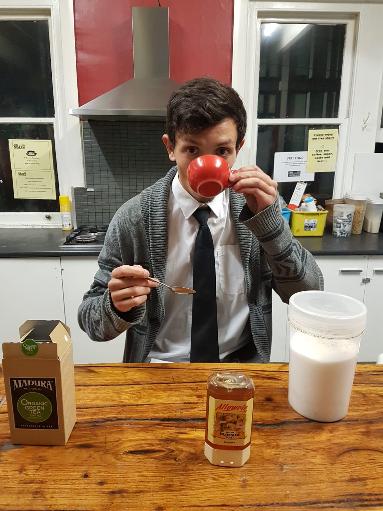

My name is Randall Wolfe. I am currently developing my skills in software development with a focus on web development, programming, and technology. I have a strong background in CNC machining, operations, and hands-on problem-solving, and I am passionate about learning new skills that can help me grow personally and professionally.
My education is focused on computer science, business, and leadership. I am currently pursuing my studies at Odessa College, where I am building a strong foundation in programming, problem-solving, business operations, and professional development. I am committed to learning new skills that will help me grow in technology, remote work, and future business opportunities.
My work experience includes CNC machining, aerospace manufacturing, oilfield machining, inventory management, shipping and receiving, purchasing, IT support, and production tracking. I have developed strong hands-on skills in problem-solving, quality control, work order management, and keeping production flowing efficiently. My background has helped me build discipline, attention to detail, and the ability to adapt in fast-paced work environments.
My skills include web development, programming basics, CNC machining, machine control, inventory management, IT support, and operations support. I have experience with HTML, CSS, JavaScript, Python, Flask, SQL basics, G-code, M-code, and Mazak/Mazatrol conversational programming. I am continuing to develop my technical skills so I can grow into web development, remote technology, and software-based roles.
You can contact me at RandallWolfe12@Gmail.com
About Contact Education Experience Skills